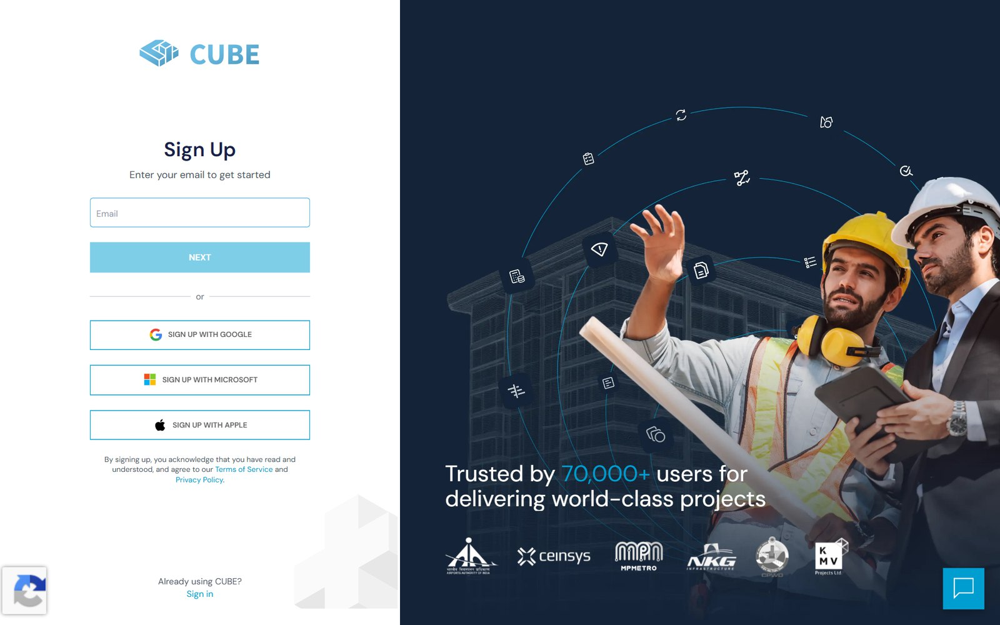
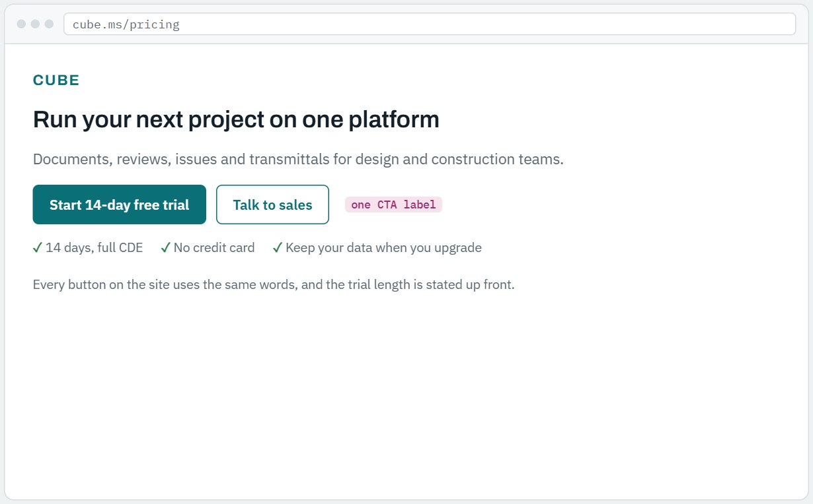
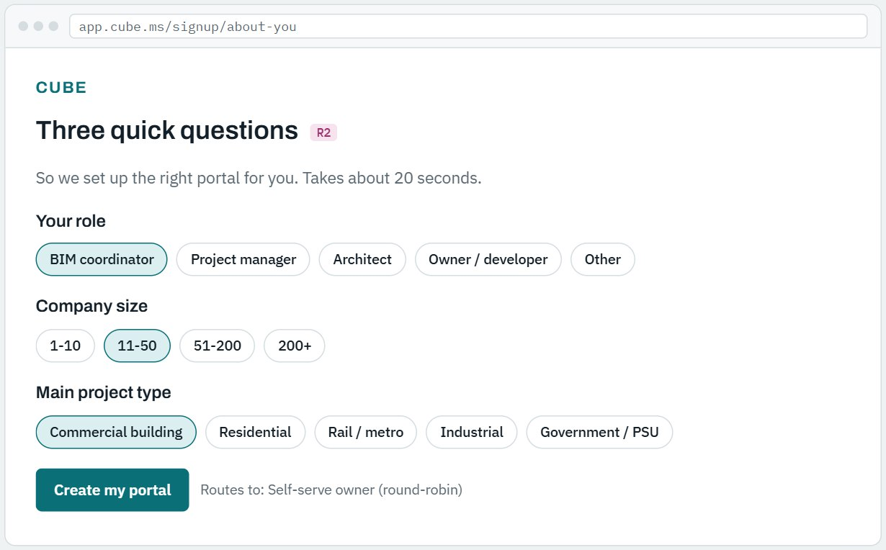
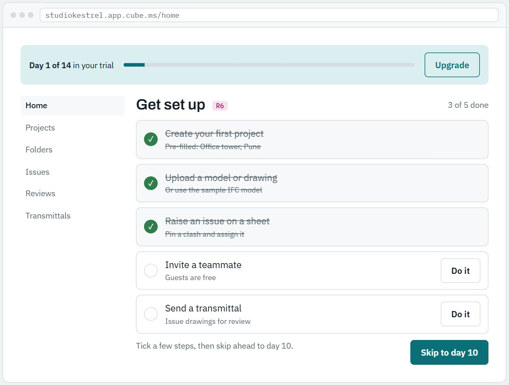
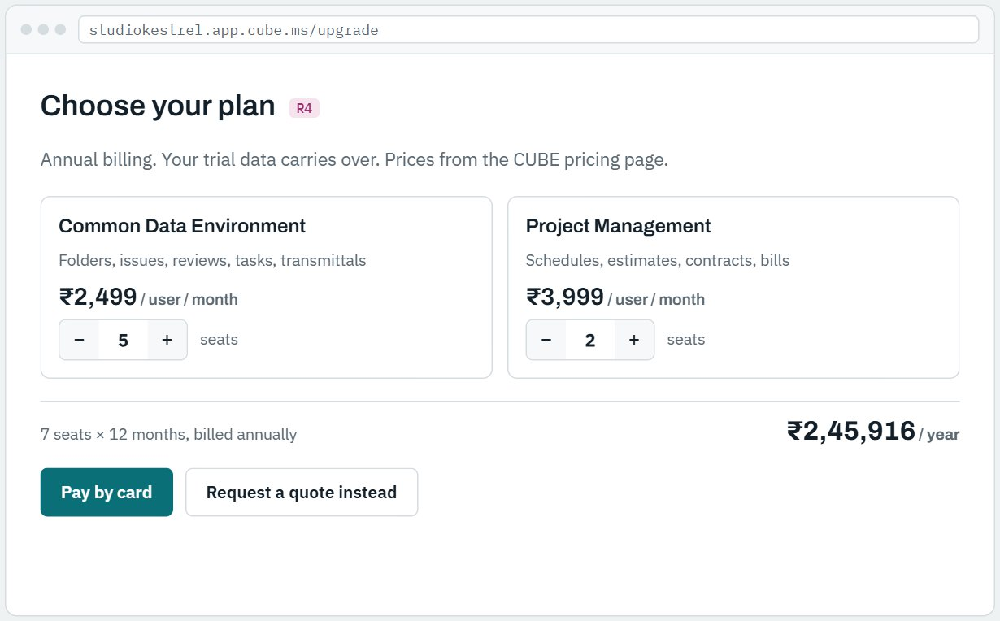

Case study · CUBE · 2026
Fixing the trial-to-paid drop-off
CUBE's free trial brought in sign-ups, but almost none became customers, and nobody could say where they were lost. I joined every trial and paid portal to its CRM deal, found the leak, and wrote a PRD with a clickable prototype for the fix.
- Role
- Product & AI Automation Intern
- Company
- CUBE, construction SaaS (70k+ users)
- Data
- 84 portals, 74 live CRM deals
- Output
- Funnel analysis, PRD, prototype
Why I built this
The sales team could see trial sign-ups coming in, but the portal list and the CRM had never been joined, so the trial funnel was invisible. Opinions about why trials failed were easy to find; numbers were not.
I wanted to answer one question with data: where exactly do trial users drop, and what would fix it? That meant mapping every portal to its deal and measuring each stage before writing a single requirement.
What I found
I tracked four stages: Requested (portal signed up), Active (provisioned and used), Paid (a paid portal exists) and Won (CRM deal closed). Trials clear the first step easily and then stop. Contract-first deals, where sales signs the customer before any portal exists, convert 50 of 50.

- Nobody follows up. Most self-serve sign-ups never became a CRM deal, so no owner ever saw them.
- No way to pay. There is no upgrade step inside the trial; the only conversions came through a sales deal.
- No real deadline. Older trials were extended in bulk, and 6 self-serve deals sat in the "Trial" stage for over a year.
- Noisy data. Internal tests and duplicates made up 42% of sign-ups, inflating every top-of-funnel number.
Where the journey breaks today
The sign-up screen is short and clean. The problem is everything after it: once the portal is created, there is no onboarding, no hand-off to sales, and no upgrade step. Across the site, six different button labels lead to this page, and none states the trial length.

The fix in three moves
Nine requirements (R1–R9), each tied to one leak in the data, grouped into three moves and ranked with RICE.
- Route every sign-up to an owner. Create a CRM deal at sign-up, ask three qualifying questions, send large and government accounts straight to sales, and flag test portals.R1 R2 R8
- Get users to value in one session. An instant portal, a guided five-step first-project checklist, and nudges on days 3, 10 and 13.R3 R6 R7
- Let them pay inside the trial. An upgrade screen with seats and list prices, a hard 14-day end, and the CRM stage updated automatically.R4 R5 R9




Prototype
Click through the proposed flow. Tick checklist steps, change seat counts, pay or request a quote, and watch the "Behind the scenes" panel fill with the CRM events each step creates. Sample data only.
What's in the PRD, and why
The full document follows CUBE's own brand template. Each section is there to answer a question a reviewer would ask.
| Section | What it covers | Why it's there |
|---|---|---|
| Goal & vision | The trial as a second, product-led way into CUBE | Sales already wins every contract-first deal; the trial should feed sales, not compete with it |
| Background | The funnel chart and six measured signals | Every requirement traces back to a number here |
| North Star | Trial-to-paid within 30 days: 6% today, 15% target | Measured per portal, so more sign-ups can't game it |
| Personas | Small studio, developer, government body, channel partner | Each needs a different trial: a card checkout or a named rep |
| Requirements | R1–R9, each mapped to one leak, ranked with RICE | Keeps scope honest: no feature without evidence |
| User journey | Nine steps from first click to trial end, plus failure states | Shows the CRM hand-off at each step, the part missing today |
| Technical | Sign-up service, CRM API integration, billing, analytics events | A concrete starting point for engineering, and the events to measure success |
| Release & metrics | Three gated phases, L1/L2 metrics with baselines, an A/B test | States plainly that ~7 trials a quarter is too few for a fast significant test |
How I did it
- Data: 53 trial portals from the admin export and 63 CRM deals mapped to portals, joined to 74 live deals pulled through the Freshsales API (read-only). After removing tests and duplicates: 84 customer portals.
- Checks: stage counts reconcile with the inputs, and five deals were spot-checked by hand in the CRM.
- Current flow: walked CUBE's public pricing and sign-up pages without creating an account.
- Tools: Python (pandas), Freshsales REST API, Playwright for screenshots, HTML and JavaScript for the prototype.
- Confidentiality: client and staff names are left out of everything public.
Skills this shows
- Funnel analysis on messy B2B data
- Problem framing from evidence
- PRD writing with RICE prioritisation
- North Star and L1/L2 metrics
- Prototyping a full journey
- Experiment design with small samples